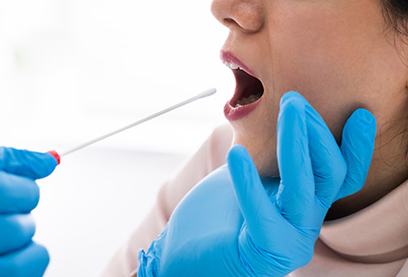
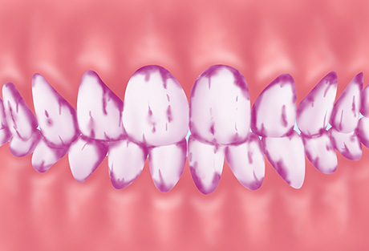

「予防」こそが、歯を守る手段です
かつて対症療法が当たり前だった歯科治療ですが、近年では「予防」がもっとも大事だと見直されています。治療をくり返せば、歯を失うことになりかねません。町田市の歯医者「ワイズデンタルオフィス」では予防歯科に力を入れ、皆様の大切な歯を末永くお守りしたいと考えています。むし歯や歯周病になってからの治療ではなく、予防のための通院を始めましょう。
治療ではなく予防が重要視される時代
「むし歯や歯周病になってから治療をする。」これは、従来歯科医療で当たり前とされてきたことです。しかし風邪やケガなどの治療とは異なり、歯科治療は歯や歯ぐきを元通りすることはできません。再発・再治療のたびにダメージが積み重なり、確実に歯を失うことにつながってしまいます。
そこで近年、ようやく治療よりも「予防」が重視されるようになってきました。発症自体はもちろん治療後の再発予防のためにも、何も症状がないうちから定期検診・メインテナンスに通う習慣をつくりましょう。
厚生労働省認定歯科衛生士がPMTCを担当します。
PMTCとは「プロフェッショナル・メカニカル・トゥース・ クリーニング」の略であり、歯科の専門家が専用の器具を使って歯の汚れを徹底的に除去する処置のことです。ブラッシングでは落としきれない部分もキレイになり、むし歯・歯周病のリスクを軽減します。
当院では、厚生労働省認定歯科衛生士がPMTCを担当します。定期的にPMTCを受け、歯の健康を保ちましょう。
当院の検査メニュー
定期検診では以下の検査を行い、お口の状態をチェックしていきます。
咬み合わせチェック
| 咬み合わせの乱れは、肩こりや頭痛、不眠、疲労などの不定愁訴（原因不明の不快な症状）を引き起こすことがあります。歯周病の悪化や日頃の癖などによって乱れることがあるため、定期的にチェックを受けましょう。 |
カリエスリスク診断
|  | 唾液を採取し、その中に含まれる細菌などを調べることで、むし歯（カリエス）のリスクを把握します。診断結果をもとに、一人ひとりに適したアドバイスを行います。すぐにむし歯になり、再治療をくり返してしまう方などにおすすめです。 |
ダイアグノデントを使った検査
| 歯にレーザーを照射することで、むし歯の進行度を数値化して把握できる機器「ダイアグノデント」を使った検査を行います。ドイツのKavo社が開発したこの機器は、目視では見つけにくい部分のむし歯も見逃さず、早期治療を可能にします。 |
当院の予防歯科メニュー
ブラッシング指導
| むし歯・歯周病予防の基本となるのは、毎日のブラッシングの積み重ねです。ブラッシングをしていてもトラブルが起きてしまう方は、正しくみがけていない可能性があります。みがき残しが出やすい部分をチェックし、一人ひとりのお口の状態に合った正しいブラッシング方法を指導します。 |
マウスピース
| 歯周病の進行によって歯がグラグラしていたり、歯ぎしりや食いしばりが原因で咬み合わせに悪影響を与えていたりする場合には、一人ひとりの歯型に合わせてオーダーメイドのマウスピースを製作します。就寝時に装着するなどし、咬み合わせの乱れを防ぎます。 |
PMTC
| PMTCとは「プロフェッショナル・メカニカル・トゥース・ クリーニング」の略であり、歯科の専門家が専用の器具を使って歯の汚れを徹底的に除去する処置のことです。ブラッシングでは落とせなかった部分までキレイになり、定期的に受けることで、むし歯・歯周病の予防につながります。 |
PMTCの流れ
STEP01 みがき残しのチェック
|  | まず染め出し液を使い、みがき残しをチェックします。赤く染まった部分に汚れが残っており、日頃のブラッシングで落とせていない部分を知ることができます。 |
STEP02 ブラッシング指導
| 染め出し液で確認した汚れが残っている部分までしっかりと歯ブラシが当たるように、正しいブラッシング方法を指導します。きちんと身につけ、毎日のケアに活かしましょう。 |
STEP03 超音波スケーラーによる歯石除去
| 超音波による振動が伝わるフックのような形状のスケーラーを使って、歯石を除去します。また歯面の洗浄や、バイオフィルム（細菌の膜）の除去などにより、普段のブラッシングで落とせない汚れを取り除きます。 |
STEP04 ハンドスケーラーによる歯石除去
| 機械では除去が難しい細かな汚れを、ハンドスケーラーという器具を使って時間をかけ手作業で丁寧に落とします。 |
STEP05 エアフローによる着色・バイオフィルムの除去
| 超微細なウォータースプレーとエアフローパウダーを歯面に吹き付け、しつこいステインやプラークを除去します。気圧により噴射するため歯面を傷つけない上に、痛みもありません。 |
STEP06 ブラッシング
| ブラシやデンタルフロスを使い、歯と歯の間や歯周ポケットの中のプラークを丁寧に取り除きます。 |
STEP07 ポリッシングによる最終的な仕上げ
| 専用の特殊なカップに薬剤を付けて高速回転させながら、歯面をツルツルにみがき上げます。薬剤には歯と同じ成分であるハイドロキシアパタイト配合のペーストを使用し、表面の細かな傷を修復。表面を滑らかにして汚れの再付着を防止し、歯の再石灰化を促します。 |
STEP08 ガムマッサージ
| アロマテラピー効果のあるジェルを使って、歯ぐき全体を指でくるくるとマッサージします。表情筋や頭がすっきりして血行や唾液の分泌が促され、筋肉がほぐれてリラックス効果を得られます。 |
症例紹介
○○の症例
 |
|
テキストが入ります。テキストが入ります。テキストが入ります。テキストが入ります。テキストが入ります。テキストが入ります。テキストが入ります。テキストが入ります。テキストが入ります。テキストが入ります。テキストが入ります。
| 治療における注意点・リスク | |
|---|---|
| 治療期間 | |
| 治療費用 |
○○の症例
|
|
テキストが入ります。テキストが入ります。テキストが入ります。テキストが入ります。テキストが入ります。テキストが入ります。テキストが入ります。テキストが入ります。テキストが入ります。テキストが入ります。テキストが入ります。
| 治療における注意点・リスク | |
|---|---|
| 治療期間 | |
| 治療費用 |
定期検診のすすめ
定期検診に通い専門的なメインテナンスを受けていれば、むし歯・歯周病の予防につながります。またもし異変が起きても早期発見・早期治療が可能になり、歯の寿命を延ばせるようになります。
定期検診は、いわば「歯科の人間ドック」です。当院では定期検診を通じて患者様のお口の健康をサポートいたします。毎日のブラッシングと定期検診・メインテナンスで、ご自分の歯を長く守っていきましょう。